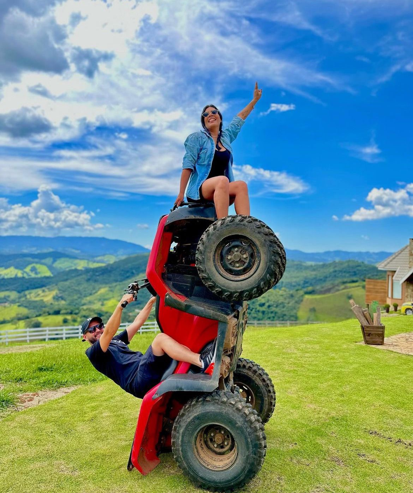
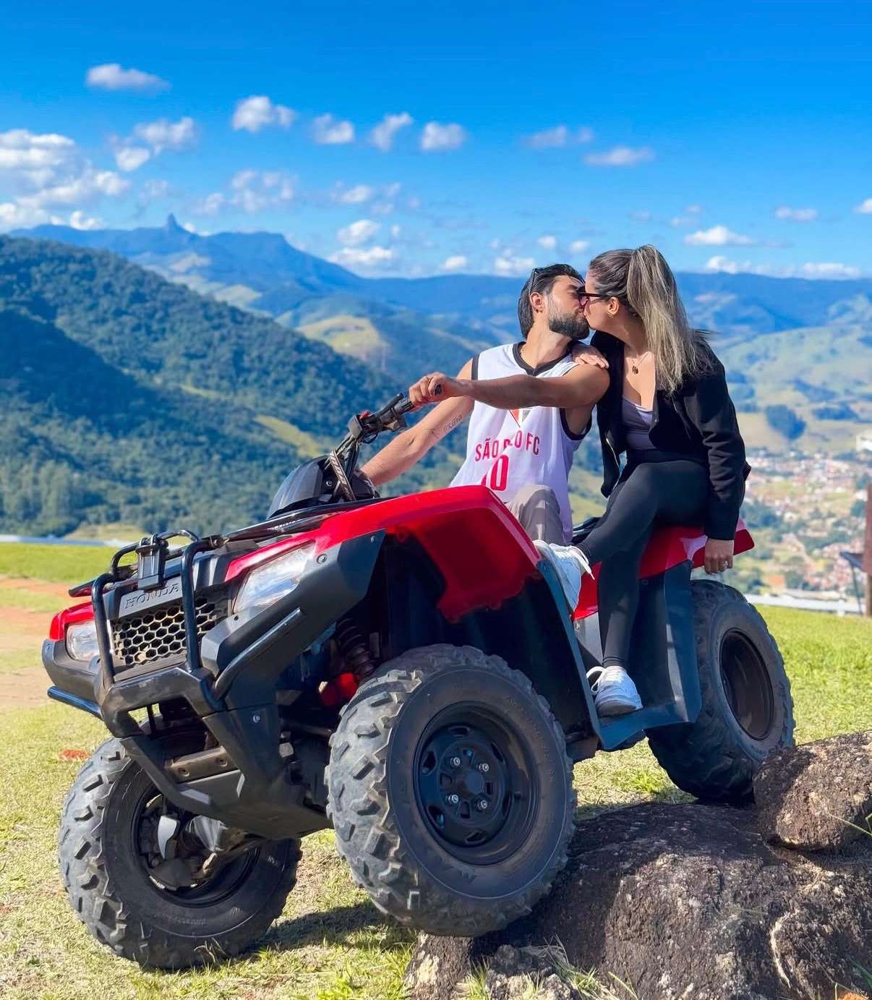

PASSEIO DE QUADRICICLO • SAPUCAÍ-MIRIM / MG
A Serra da
Mantiqueira
de um jeito
diferente.
Trilhas, montanhas e três paradas para aproveitar a paisagem.
ROTA EXCLUSIVAGUIA DURANTE TODO O PERCURSO

01 / A EXPERIÊNCIA
011h30DURAÇÃO APROXIMADA
023 paradasCACHOEIRA + BALANÇOS
03Com guiaEM TODO O PERCURSO
A EXPERIÊNCIA 01 / 04
O caminho também
faz parte do passeio.
O ROTEIRO 02 / 04
Três paradas.
Uma rota especial.
Um passeio apreciativo acompanhado por guia do início ao fim.
01
Cachoeira
Natureza, fotos e a opção de entrar na água.
02
Primeiro balanço infinito
Vista panorâmica do alto da montanha.
03
Segundo balanço infinito
Mais um cenário para contemplar e fotografar.
FOTOGRAFIAS 03 / 04
Veja a experiência.
ANTES DE RESERVAR 04 / 04
Informações
essenciais.
Consulte as regras antes de confirmar sua data.
Chuva e condições do passeio +
Os quadriciclos são 4×4 e, segundo a equipe, os passeios ocorrem em diferentes condições climáticas. Com chuva muito forte, pode haver espera ou reagendamento para outro horário ou dia.
Cancelamento com mais de 15 dias +
O depósito vira crédito para uma única nova reserva, a ser utilizado dentro de três meses.
Menos de 48 horas ou não comparecimento +
Será cobrado o valor total do passeio, sem reembolso.
Segurança e demais condições +
É necessário seguir as instruções do guia. Para cancelamentos entre 48 horas e 15 dias antes do passeio, requisitos de participação e outros detalhes, consulte diretamente a equipe.
ROTA EXCLUSIVA · 1H30Vamos
Vamos
nessa?
Consulte sua data diretamente com a equipe.
ONDE ENCONTRAR
Como chegar ↗Sapucaí-Mirim, MG
Estrada Miguel Francisco da Silva, km 4,5 · Bairro da Cachoeira